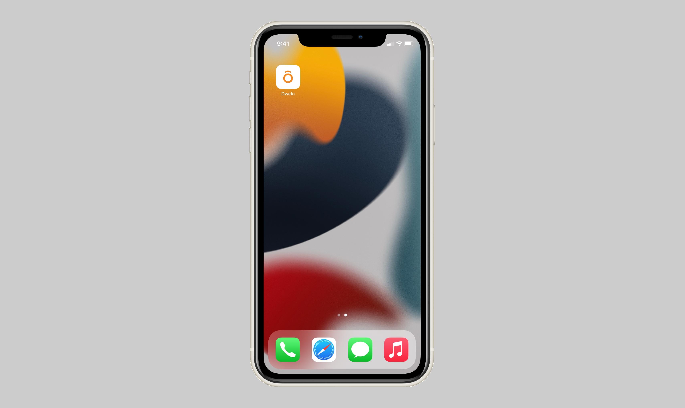

Dwelo

When I moved to Austin in 2020, my apartment included a Dwelo smart home system. It was neat being able to control my thermostat and a few built-in lights without setting anything up, but the app experience was clunky, so I explored a redesign.
Here are a few things I noticed:
The Dwelo logo opened Shortcuts Settings, but nothing about its appearance suggested that function.
Locks and lights each occupied a full-width section with considerable unused space. Since we couldn’t add our own devices, I saw an opportunity for a more compact layout.
Shortcuts only supported the thermostat. I wanted to explore including lights so one shortcut could control more of the apartment.
Running a shortcut required opening a separate modal. Bringing shortcuts onto the home screen would put those actions within easier reach.
I reached out to Dwelo to suggest adding dark mode. When it was later introduced, some interface elements remained bright white, which felt jarring at night, and some text became difficult to read against the darker backgrounds. It reinforced how important consistency and readability were to the redesign.
Apple’s Home app influenced my redesign. I replaced the full-width accessory sections with compact controls and brought shortcuts onto the home screen so everyday actions would be easier to reach. I also explored including lights in shortcuts, allowing a single action to control both lighting and temperature. What used to take several taps would now only take one.
The goal was to make controlling the apartment feel more direct, with less navigation between opening the app and doing what I needed.